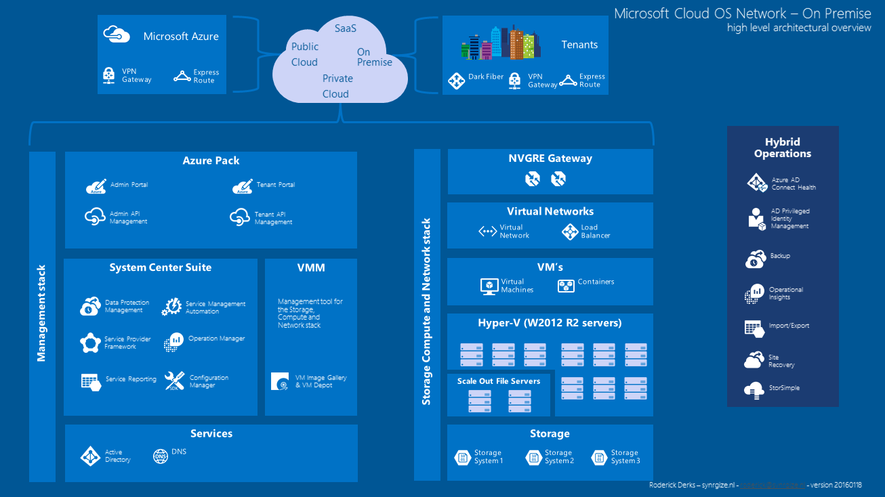
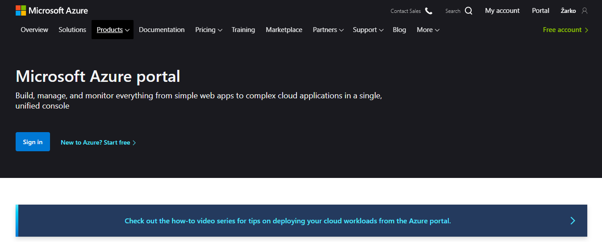

Microsoft Azure koristi specijalizovani operativni sistem, nazvan Microsoft
Azure,
za pokretanje svog „sloja“. Klaster hostovan u Majkrosoftovim centrima podataka
koji
upravljaju računarstvom i resursima za skladištenje računara i obezbeđuje
resurse
(ili njihov podskup) aplikacijama pokrenutim na vrhu Microsoft Azure-a.
Microsoft
Azure je opisan kao „oblačni sloj“ povrh brojnih sistema Vindovs Server, koji
koriste Vindovs Server 2008 i prilagođenu verziju Hiper-V, poznatu kao Microsoft
Azure Hypervisor za pružanje virtuelizacije usluga.

Skaliranjem i pouzdanošću kontroliše Microsoft Azure Fabric Controller-a, koji
osigurava da usluge i okruženje ne propadnu ako jedan ili više servera otkaže u
Majkrosoftovom centru podataka, a koji takođe omogućava upravljanje korisnikovom veb
aplikacijom, kao što je dodeljivanje memorije i balansiranje opterećenja.

Pored interakcije sa uslugama putem API-ja, korisnici mogu da upravljaju Azur
uslugama i pomoću veb portala Azur, koji je opštu dostupnost dostigao u decembru
2015. Portal omogućava korisnicima da pretražuju aktivne resurse, menjaju postavke,
pokreću nove resurse i pregledaju osnovne podatke o nadgledanju sa aktivnih
virtuelnih mašina i usluga.
